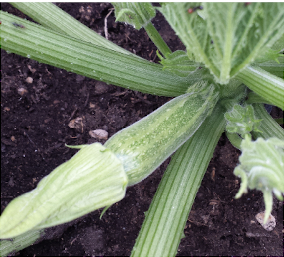
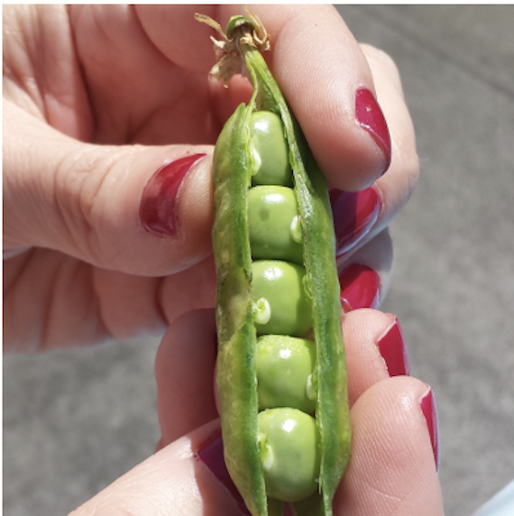

Produzione 2019
Zucchine
Coltivare in terreno molto ricco di materia organica e non coltivare dopo Solanacce o piante della stessa famiglia delle cucurbitacce
- Varietà:Zucchina chiara di Faenza
- Periodo di Semina:Marzo/Aprile
- Primo raccolto:Fine Aprile
- Ultimo raccolto:Fine Luglio
- Raccolto:
| Dimensione |
Quantità |
| Piccole (10cm) |
16 |
| Medie (11-16cm) |
26 |
| Grandi (>16cm) |
9 |
|
51 |
-->Acquista Semi<--
Piselli
American Wonder:Varietà media precoce come ciclo colturale
Consigli
- Piantare in semenzaio riscaldato
E' importante:
- Acquistare vasetti biodegradabili (di cocco o cartone)
- Mantenere areato il semenzaio per evitare muffe
- Non usare il coperchio del semenzaio
- Non usare mettere il semenzaio vicino al termosifone
- Fissare i sostegni nel terreno non appena le piantine raggiungono i 10cm
- Acquistare una rete con spazi di non più di 10cm per garantire sostegni adeguati
-->Acquista Semi<--